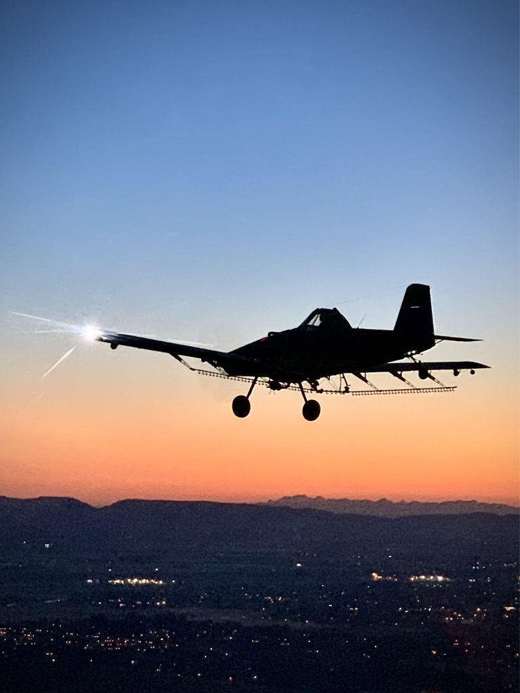
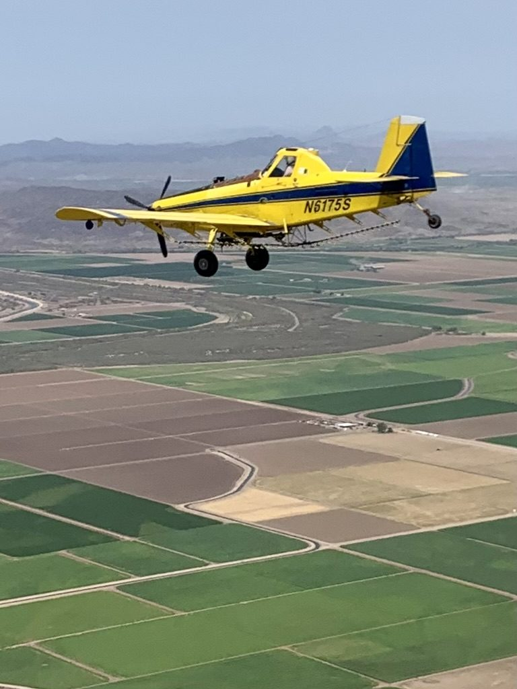
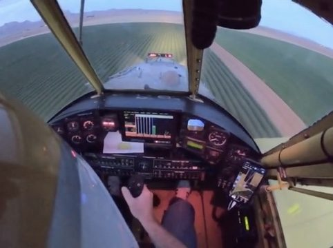

Before the roll
Say the plan out loud
Density altitude, how close you are to gross, where the tail should come up, and the point on the runway where you dump if it hasn't. Decide it while you're stopped, not while it's happening.

Agricultural aviation qualification
Every scenario in this program starts with a real accident report and the numbers behind it — how fast the airplane was moving, how much runway was left, how many seconds the pilot had. Then you fly it, with a real load, before it happens to you.
Gooding, Idaho
Real-world agricultural aviation
Accident data · Real scenarios · Measured proficiency
The basics
AQP stands for Advanced Qualification Program. It's the FAA's way of training pilots against the threats that actually show up in their own operation, instead of running through the same fixed list of maneuvers every year.
It works like this: look at your own accident and incident data, pick the threats that matter most, write training scenarios around them, fly them, and measure whether pilots can handle them. Airlines have trained this way since 1990. Crop Jet applies the same idea to agricultural aviation — where the airplane, the environment and the risks are very different, and where most operations have been doing something like it informally for years without a name, a syllabus or a way to measure it.
AQP keeps training pointed at the emergencies that actually kill ag pilots — so the first time you face one with a load on isn't the real one.
“Courage is doing what you're afraid to do. There can be no courage unless you're scared.”
Capt. Eddie Rickenbacker — top American ace of WWI, 26 victories.
How it works
The first module is the one nobody else was teaching: when and how to dump the load on a takeoff that is going wrong. Ag airplanes are the only aircraft that can shed half their weight in seconds on command. Almost no one trains it.
The accident that prompted it: a turbine Ag-Cat, heavy with foliar fertilizer, rolled downwind, never got flying and hit trailers at the end of the runway. No dump was attempted. Every heavy takeoff has three places to make that decision.
These figures are from the published dump-training article and are for briefing, not planning. Your airplane's flight manual, your gate or door, your load and your density altitude govern. Dump training is flown with water, at a strip with room, with an instructor who has done it. George recommends 200+ hours in the aircraft before a pilot goes through the syllabus.
Before the roll
Density altitude, how close you are to gross, where the tail should come up, and the point on the runway where you dump if it hasn't. Decide it while you're stopped, not while it's happening.
Syllabus scenario 3
The tail-up point is the earliest honest signal the airplane isn't going to make it. Pilots practice recognizing it with a real water load so the reaction is a reflex, not a debate.
Syllabus scenario 6
Airborne or nearly so, obstacles coming, 300–500 feet left. Pull the handle. The airplane pitches up hard as the weight leaves; it takes forward stick to keep it from stalling.
Engine-out with a load
Classroom analysis of real accident reports where the load stayed on too long. Dump early and decisively: better glide, more control authority.
“If you're faced with a forced landing, fly the thing as far into the crash as possible.”
Bob Hoover — fighter pilot, test pilot, and the airshow legend other pilots studied. He said it for decades because it keeps working: never stop flying the airplane.
A training day, as flown
Classroom first, working through real accident reports where the load-jettison decision was made late or not at all. Then each pilot flies the scenarios with a water load at several phases of flight. Then everybody sits down together.
30 min
The accident, the numbers, the three decision points, what the airplane will do when the load leaves.
1.5 hr
Water load. Tail-up recognition, dump at the mark, the pitch-up and the forward stick. Repeated until it's clean.
1.5 hr each
Same syllabus, each pilot in the seat. The others watch from the ground and see what the airplane does.
1.5 hr
What each pilot saw, where the decision was late, what changes tomorrow morning. This is where the learning sticks.
“Complacency kills. Regular refreshers keep reflexes sharp and procedures current.”Gibson Oster, Lakeland Dusters, after attending — AgAir Update, June 2026


“It was my fear that made me learn everything I could about my airplane and my emergency equipment, and kept me flying respectful of my machine and always alert in the cockpit.”
Gen. Chuck Yeager, Yeager: An Autobiography (1986). From the same page: “Experience is everything. The eagerness to learn how and why every piece of equipment works is everything.”
Where it came from
George's son flies a 737 for Delta. Conversations about how airline crews train, and a push from Dan Gryder's general-aviation AQP work, turned into a question: why doesn't ag have this?
The FAA creates AQP as a special rule (SFAR 58): a voluntary, data-driven alternative to the fixed maneuver list, built around scenarios that look like real line operations.
AQP is written into the regulations as 14 CFR Part 121 Subpart Y. Guidance lives in Advisory Circular 120-54A. Most major airlines train under it today.
The NTSB's special report on ag operations (SIR-14/01) studies 78 ag accidents from 2013, nine of them fatal. It finds training that varies widely between providers, no duty-time limits under Part 137, fatigue in five of the accidents, and risk-management gaps around obstacles, density altitude and stalls.
A rookie ag pilot dies in a turbine Ag-Cat overrun in Northern California. No dump was attempted. George writes the first AQP for Ag dump syllabus and flies three pilots through it in a day.
AgAir Update publishes the dump-training article in January. The AQP for Ag group opens on Facebook on June 2 as the working home for the program.
Operators start attending. Gibson Oster of Lakeland Dusters writes up the program for AgAir Update: classroom accident analysis plus water-load scenarios at multiple phases of flight.
“Luck is where you find it. But to find it, you have to look for it.”
Rear Adm. Eugene Fluckey — Medal of Honor and four Navy Crosses as skipper of USS Barb in WWII. Between war patrols he studied other skippers' patrol reports, learning from their mistakes and close calls before taking his own boat back out. Same idea, different cockpit: study the reports so the lesson doesn't have to be yours.
Who's behind it
Third-generation pilot, second-generation ag pilot. Owner-operator of Crop Jet Aviation in Gooding, Idaho. He sees the human and financial cost of a wreck up close, and he built this so fewer operators have to.
Soloed at 16, had private, seaplane and instrument by 17, commercial and multi by 18, helicopter later. Started ag flying in 1997 at 23 and has done nothing else since 1998. Before setting up Crop Jet in Idaho in 2005 he filled 19 different seats in ag aviation across 14 states, working 20-plus crops in 16 models of ag aircraft. Since then Crop Jet has treated more than 750,000 acres of farm ground and 500,000 acres of government work: grasshopper control for USDA-APHIS, fire-rehab seeding, herbicide.
He is a past president of the Idaho Agricultural Aviation Association, Idaho's board member to the NAAA, and was instrumental in Idaho's MET tower marking law (HB511, 2013). He also founded and runs the “Rookie, I want to be an Ag Pilot” Facebook group, where he posts his own trainees' progression flights, radio calls and debriefs for more than 19,000 members.
“I can give you a six-word formula for success: Think things through — then follow through.”
Capt. Eddie Rickenbacker again — because that formula is the pre-takeoff brief in a sentence: decide the plan while you're stopped, then fly it.
AQP for Ag Pilots is an industry safety effort. It is not an FAA-approved program under 14 CFR Part 121 Subpart Y, and it does not replace the training, checks or currency required under Parts 61 and 137, or your state applicator license.
Techniques described here are techniques that can be used. The approved flight manual for the aircraft you're flying, your operator's procedures and a qualified instructor govern. Dump training is conducted with water, with adequate runway, by pilots experienced in the aircraft.
Request info
The AQP for Ag group is a public page dedicated to the inception of an Advanced Qualification Program for Part 137 operations — the syllabus, the accident breakdowns, the scenarios as they get flown. Pilots, operators, instructors and the people who keep the airplanes flying are all welcome.
Want your pilots through the dump syllabus before the season? Reach George through the group or Crop Jet Aviation. A full day handles three pilots.
Read the dump-training article, then read it again before your first heavy load of the year. Brief the three decision points out loud on every takeoff.
The syllabus, the scenarios and the numbers are published. If you have data, accident experience or a scenario worth adding, post it.